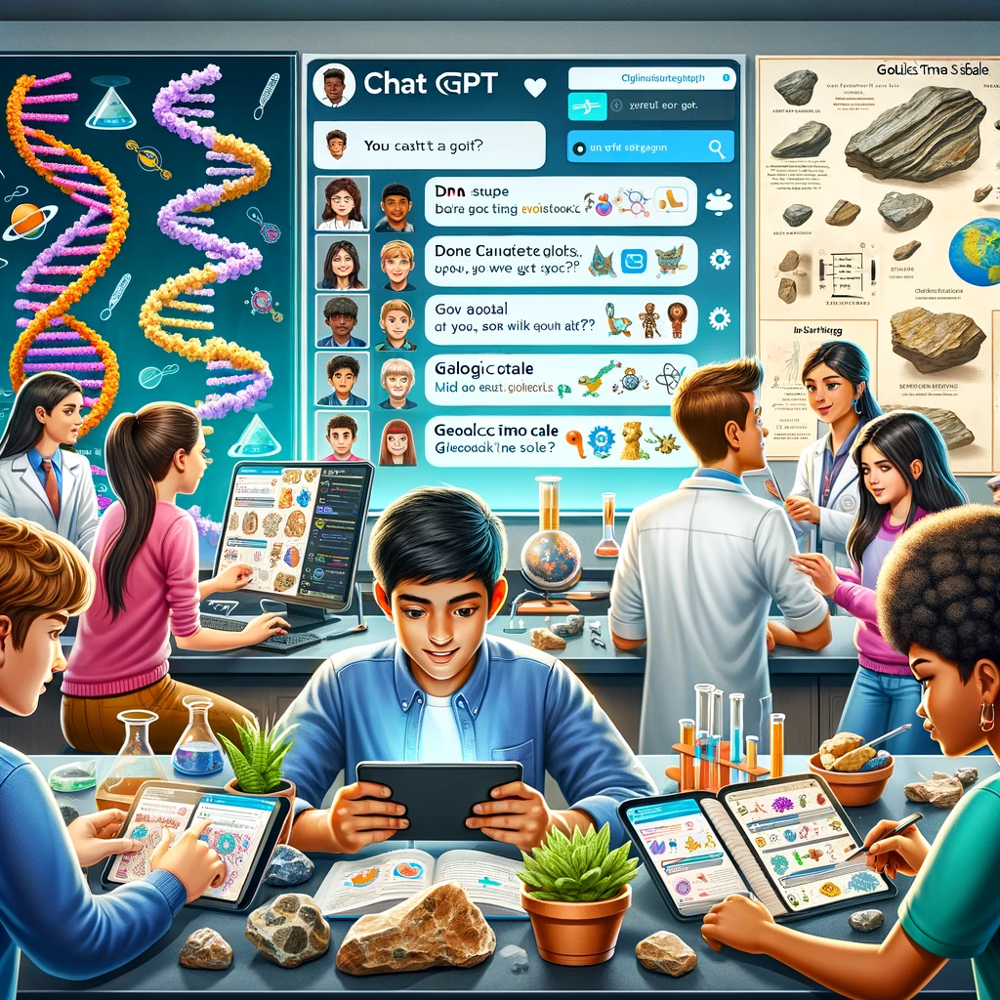

ACTIVIDADES DE CIENCIAS
¿Quieres aprovechar mi capacidad para enseñar o aprender sobre asignaturas como matemáticas, física, química, biología, genética y geología? ¡Has llegado al sitio ideal! Represento una herramienta extraordinaria que te brinda la oportunidad de interactuar con un asistente inteligente capaz de responder tus consultas, crear contenido creativo y asistirte en profundizar tus conocimientos en los temas de tu interés.
A través de las siguientes actividades, te demostraré diversas maneras en las que puedes emplearme para explorar variados aspectos de las ciencias de una forma entretenida y enriquecedora.
MATEMÁTICAS
Actividades matemáticas utilizando a ChatGPT como herramienta.
Pista 1: "Para cruzar el puente mágico, debes decir en voz alta el MCM de 24 y 36. Pídele a ChatGPT que te ayude a calcularlo."
Pista 2: "Para iluminar la cueva oscura, debes determinar la suma de los ángulos internos de un pentágono. ChatGPT puede darte la fórmula y el resultado."
Pista 3: "El código para el compartimento secreto es la descomposición en factores primos del número 90. Consulta con ChatGPT para obtener los factores."
Pista 4: "Para revelar el mensaje oculto en el suelo, calcula el área de un triángulo con una base de 8 cm y una altura de 5 cm. ChatGPT te puede proporcionar la fórmula y el cálculo."
Pista 5: "Para desactivar la alarma, debes encontrar los valores de 'x' e 'y' que satisfacen el sistema:
\begin{align*} x + y = 10 \\ 2x -y = 0 \end{align*}ChatGPT puede ayudarte a resolverlo."
QUÍMICA
Actividades de química utilizando a ChatGPT como herramienta.
Pista 1: "Para encontrar la próxima pista, debes mezclar reactivos químicos para producir agua (H₂O). Si tienes 2 moles de hidrógeno (H₂) y suficiente oxígeno (O₂), ¿cuántos moles de agua puedes producir?"
Pista 2: "Encontrarás la pista dentro del tubo de ensayo que contiene el metal más reactivo. Entre el sodio (Na) y el hierro (Fe), ¿cuál reaccionará más vigorosamente con el agua?
Pista 3: "La siguiente pista se encuentra en un frasco que contiene una sustancia con un enlace iónico. ¿Qué tipo de compuesto deberías buscar, uno formado entre metales y no metales, o entre no metales únicamente?"
Pista 4: "La pista se revelará cuando identifiques un isótopo radiactivo utilizado en medicina para el diagnóstico por imágenes. ¿Cuál es este isótopo y qué tipo de radiación emite?"
Pista 5: "La siguiente pista está en poder de un elemento que forma un catión con carga +2 y es esencial para la contracción muscular. ¿Cuál es este elemento y cómo se representa su catión?"
FÍSICA
Actividades de física utilizando a ChatGPT como herramienta.
Pista 1. "La clave para la siguiente pista está oculta a la distancia exacta que recorre un proyectil. Si lanzas una piedra con un ángulo de 45° y con una velocidad inicial de 10 m/s, ¿a qué distancia horizontal aterrizará del punto de lanzamiento?"
Pista 2. "Para abrir la caja secreta, necesitas un código numérico que es la aceleración resultante cuando una fuerza de 132 newtons actúa sobre una masa de 12 kilogramos.
Pista 3. "Para avanzar hacia el tesoro, debes caminar la misma distancia que recorrería un móvil con movimiento uniformemente acelerado que parte del reposo y alcanza una velocidad de 5 m/s en 10 segundos."
Pista 4. "Para descubrir la ubicación del siguiente punto de la búsqueda del tesoro, debes calcular cuánto tiempo tarda en caer un objeto desde una torre de 45 metros de altura."
Pista 5. "Una montaña rusa de juguete sube una colina de 1 metro de altura antes de descender. Calcula su energía potencial en la cima y encuentra un objeto en el aula que tenga potencial de movimiento o energía almacenada."
Pista 6. "El número de pasos hacia el este que debes dar está dado por el número que representa la temperatura en la escala Kelvin donde el agua hierve a nivel del mar."
Pista 7. "El cofre se abrirá solo si se completa un circuito con una resistencia específica. Si tienes una batería de 9 voltios y quieres que la corriente sea de 3 amperios, ¿qué resistencia necesitas para el circuito?"
BIOLOGÍA Y GEOLOGÍA
Actividades de biología y geología utilizando a ChatGPT como herramienta.
Pista 1: "Para desvelar el código secreto de la cerradura, debes encontrar la proporción de descendientes con ojos azules de dos padres heterocigotos para ojos marrones (considera que el marrón es dominante sobre el azul)."
Pista 2: "La próxima pista se encuentra escondida a la misma cantidad de pasos que el número de estomas que podrías encontrar en una hoja de 1 cm² bajo el microscopio."
"Para encontrar tu siguiente pista, calcula la cantidad de oxígeno producida por un árbol en un día y da ese número de pasos
Pista 3: "La ubicación de la siguiente clave está oculta en el número de bacterias que se espera que crezcan en una placa de Petri después de 24 horas con una tasa de crecimiento de 2 divisiones por hora a partir de una sola célula."
Pista 4: "La cerradura se abrirá cuando alinees los pasos del ciclo celular en orden. Empieza con la fase G1 y termina con la citocinesis para revelar la dirección a seguir."

Pista 5: "El pulso que necesitas para abrir la siguiente puerta está dado por la frecuencia cardíaca promedio de un adulto en reposo. ¿Cuántos latidos por minuto debes contar?"
Pista 6: "Para encontrar la siguiente pista, debes recoger la cantidad de agua de lluvia en mililitros que caería en un metro cuadrado en un día con una precipitación promedio de 5 mm."
Pista 7: "Descubre la siguiente pista observando las formaciones de nubes. Cada tipo de nube (cúmulo, cirro, estrato) te indicará una dirección diferente a seguir."
Pista 8: "La clave está en la duración del día en diferentes épocas geológicas. Calcula la duración del día en una era específica y da ese número de pasos."
Pista 9: "La clave se oculta en la variación de las mareas. Observa la diferencia entre marea alta y baja y da un paso por cada centímetro de variación."
Pista 10: "Para revelar la siguiente clave, calcula la edad de las montañas más antiguas del mundo y da un paso por cada millón de años."